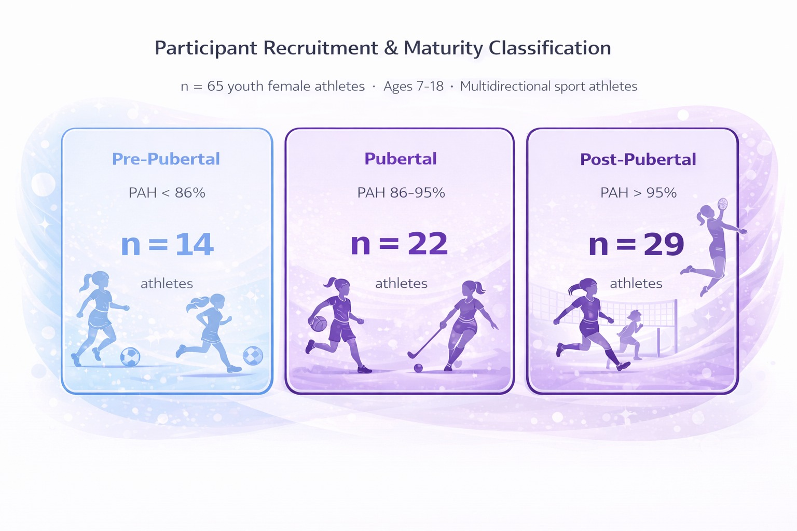

Participant Recruitment and Maturity Classification
Process
65 youth female athletes (ages 7–18) volunteered from multidirectional sports including football, basketball, volleyball, and netball. Eligibility required no lower-limb injury in the preceding six months and no history of ACL injury. Body mass, standing height, and parental heights were recorded to estimate maturity status using percentage of predicted adult height (PAH; Khamis and Roche, 1994). Participants were classified as pre-pubertal (PAH below 86%), pubertal (PAH 86–95%), or post-pubertal (PAH above 95%). Limb dominance was defined as the preferred leg for kicking a ball. Written parental consent and participant assent were obtained following full disclosure of procedures, benefits, and risks.
Why this approach?
Age is a poor proxy for biological maturation: two athletes of the same chronological age can be at vastly different developmental stages. PAH was chosen because it is non-invasive, quick to administer, and has been validated specifically for youth sport settings. Recruiting across multidirectional sports ensured the sample reflected the breadth of athletic populations most exposed to ACL injury risk.

Fig 1. Participant stratification by biological maturity. Pre-pubertal (n=14), pubertal (n=22), and post-pubertal (n=29) classified using percentage of predicted adult height (PAH) via the Khamis and Roche method.